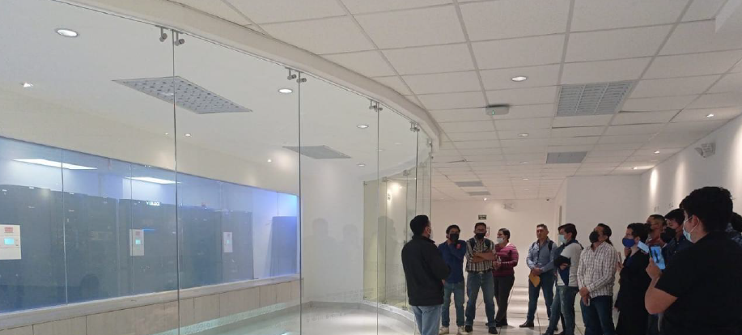
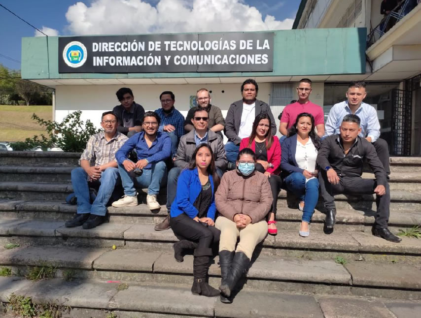
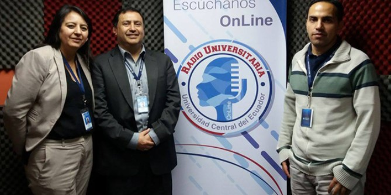

Informe documental sobre la implementación del nuevo Centro de Datos de la Universidad Central del Ecuador (UCE), ejecutado desde 2016 e inaugurado en 2017, como infraestructura crítica para la continuidad de servicios universitarios.
Capturas del modelado 3D realizado en SketchUp para ilustrar la distribución y componentes del Data Center.





Entre 2014 y 2016 la Universidad Central del Ecuador aceleró proyectos de conectividad, plataformas institucionales y servicios en línea. En ese escenario, el almacenamiento y el cómputo “tradicional” (equipos dispersos, sin control ambiental ni energía redundante) se convierte en un riesgo: una falla eléctrica, sobrecalentamiento o ausencia de monitoreo puede interrumpir sistemas académicos y administrativos.
Por eso, desde la DTIC se inicia la construcción/instalación de un nuevo Data Center como infraestructura de misión crítica: un espacio controlado, con mejores prácticas de operación, seguridad y disponibilidad para soportar servicios 24/7.
Las fuentes públicas sobre el proyecto describen un centro de procesamiento de datos moderno, alineado a objetivos institucionales. A nivel de infraestructura, un Data Center de este tipo normalmente integra:
En el caso UCE, además, se reporta un enfoque de alineamiento con prácticas de gestión tecnológica (por ejemplo, COBIT/ITIL) en trabajos académicos vinculados al proyecto.

En fuentes institucionales y técnicas se describe un Data Center con enfoque de alta disponibilidad y seguridad, alineado a estándares tipo TIER II, con redundancias y monitoreo centralizado.
Fuentes: · UCE (2017)
Fuente: Cadena & Enríquez (TIC.EC/Maskana 2017)
Fuentes: TIC.EC/Maskana 2017 · DCD (2017)
Fuente: TIC.EC/Maskana 2017
Inversión reportada (costo referencial): USD 1.200.000. Este valor aparece en una nota institucional de la UCE sobre la inauguración del Data Center y también es citado por un medio especializado del sector.
Nota: se mantiene el valor como inversión reportada por tratarse de una cifra publicada (no un detalle contractual desglosado).
En una línea de tiempo 2016–2026, el Data Center funciona como un “punto de inflexión”: marca el paso de una TI reactiva (equipos dispersos) a una TI estratégica (infraestructura crítica, continuidad y escalabilidad). Por eso es coherente que tu proyecto lo destaque como el evento principal del período.